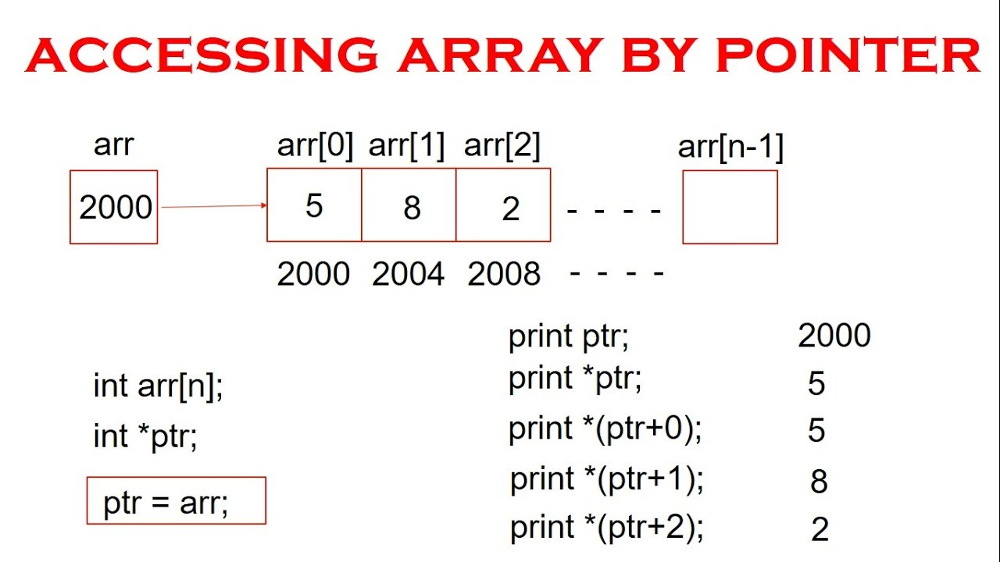

The pointer in C language is a variable which stores the address of another variable. This variable can be of type int, char, array,
function, or any other pointer. The size of the pointer depends on the architecture.
However, in 32-bit architecture the size of a pointer is 2 byte.
The pointer in c language can be declared using * (asterisk symbol). It is also known as indirection pointer used to dereference a pointer.
- Pointer reduces the code and improves the performance, it is used to retrieving strings, trees, etc. and used with arrays,
structures, and functions.
- We can return multiple values from a function using the pointer.
- It makes you able to access any memory location in the computer's memory.
Back
In most contexts, array names decay to pointers. In simple words, array names are converted to pointers. That's the reason why you
can use pointers to access elements of arrays. However, we should remember that pointers and arrays are not the same.
There are a few cases where array names don't decay to pointers..
Back
Array and pointers are closely related to each other. In C++, the name of an array is considered às a pointer, i.e., the name of an array
contains the address of an element. C++ considers the array name as the address of the first element. For example, if we create an array, i.e., marks which hold
the 20 values of integer type, then marks will contain the address of first element, i.e., marks[0]. Therefore, we can say that array name (marks) is a pointer
which is holding the address of the first element of an array.
 Back
Back


Back